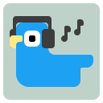

tweetmuffNot synced
tweetmuff picks up your list whenever X loads it. To refresh, open X's muted words settings.
When off, each word follows X's "exclude people you follow" setting.
One per line. /regex/ is supported. Stored locally, never sent to X.